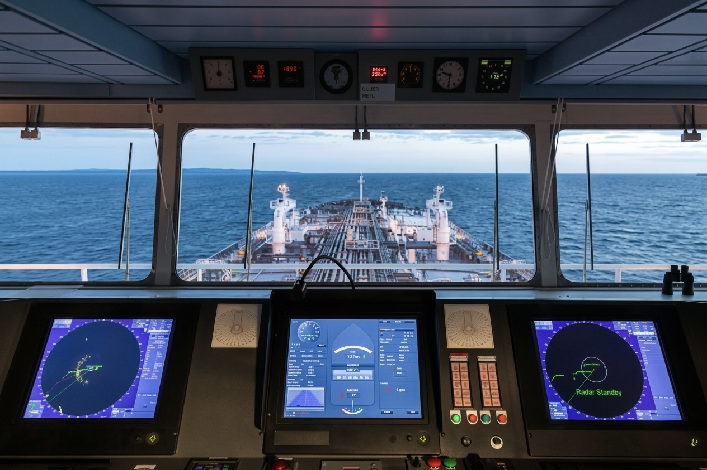

Got Questions? We Have Answers
Frequently Asked
Maritime Questions
Key answers about our ship supply, technical response, certifications, and Syrian port support services.
Scroll
keyboard_arrow_down
Support Center
Common Questions
Click any question to expand the answer. Can't find what you're looking for? Reach out directly.
info
General Operations
Which ports do you actively service? expand_more
Our primary hubs are Lattakia and Tartous ports in Syria. We provide full-scale agency, technical, and supply services 24/7 across these terminals, with dispatch capabilities reaching all vessels within Syrian territorial waters.
Are you ISSA and IMPA certified? expand_more
Yes. M&O is a certified member of both the International Shipsuppliers & Services Association (ISSA) — the first Syrian company to join in 2002 — and the International Marine Purchasing Association (IMPA), ensuring all provisions and stores meet global maritime standards.
How many vessels are you currently serving? expand_more
Over our 22+ years of operation, we are serving more than 450 vessels belonging to over 50 international shipping companies, covering all vessel types from bulk carriers to tankers and passenger ships.
inventory_2
Supply & Provisions
How quickly can you dispatch emergency provisions? expand_more
For emergency situations, our dispatch fleet can deliver fresh, frozen, and dry provisions to your vessel within hours of anchoring or berthing, utilizing our localized supply chain and cold-storage warehouses.
Do you supply bonded stores? expand_more
Yes. We supply a full range of bonded (tax-free) products directly to vessels, including cigarettes, tobacco, alcohol, beverages, perfumes, and electronics, in compliance with Syrian Customs Authority regulations.
Can you supply nautical charts worldwide? expand_more
Absolutely. We maintain a stock of over 2,500 up-to-date Admiralty charts and can dispatch publications, digital charts (ARCS/ENC), and IMO signs worldwide. We are the first and only company in Syria offering this service.
engineering
Technical & Safety
Do you provide underwater inspection services? expand_more
Yes. We coordinate specialized marine engineering and underwater hull inspections utilizing certified diving teams equipped for technical repairs, hull cleaning, and condition surveys.
Can you service FFA and LSA equipment? expand_more
Yes. We provide full inspection, servicing, and replacement of Fire Fighting Apparatus (FFA) and Life Saving Apparatus (LSA) including fire extinguishers, life rafts, immersion suits, and pyrotechnics — all compliant with IMO and SOLAS regulations.
Do you handle spare parts logistics? expand_more
Yes. We collect spare parts from local or international suppliers, handle customs clearance and airport cargo processing, then deliver directly to the vessel or store them safely in our warehouse until the ship arrives.
headset_mic
Still Have Questions?
Our operations team is available 24/7. Send us a message and we'll respond within the hour.
Contact Support arrow_forward